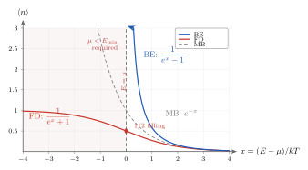

玻色子和费米子的化学势, 为什么命运完全相反?
上一节我们用二维 Ising 把相变讲成了一个"无外界帮助的对称破缺"问题. 但那整个讨论里, 粒子是被钉在格点上的经典自旋 —— 我们根本没问: 如果粒子能自由跑, 而且是"同一种"的 (全同), 统计会变成什么样? 这件事在经典气体那里藏得很好, 因为配分函数的 $N!$ 只是 Gibbs 为了避免混合佯谬手工补进来的. 但温度一低, 波包一重叠, 就藏不住了.
本节要讨论的观察很简单: 把液氦降到 $2.17\,\mathrm{K}$ 以下, 它会变成超流; 把一块铜拿到室温下, 它的电子比热只有 $3R/2$ 经典值的 $\sim 1\%$. 两者都被放在"量子统计"这个帽子下, 但方向正好相反 —— 一个是挤在一起的宏观集体, 一个是被推开的铁面填充. 分布函数 $1/(e^{\beta(E-\mu)}\pm 1)$ 里那个 $\pm 1$, 是两条命运的全部根源. 这一节我们把这个 $\pm 1$ 真正推一次, 然后跟踪它如何反过来规定化学势 $\mu$ 的允许范围, 最终得到两幅截然不同的低温图像.
一、全同性与对称性的二选一
先把起点说清楚. 全同粒子没有标签, 多体波函数 $\Psi(x_1,\ldots,x_N)$ 在交换任意两个坐标时, 只能差一个相因子. 因为连续两次交换回到自己, 这个相因子的平方必须是 $1$, 所以要么 $+1$ (玻色子), 要么 $-1$ (费米子). 三维空间里只有这两种; anyons 之类的东西只在二维出现, 不在本节考虑.
这条对称性要求有一个直接的组合学后果. 对于单个单粒子能级 $E$, 问"这个能级上有几个粒子":
- 玻色子: $n$ 可以是 $0, 1, 2, \ldots$ 任意非负整数. 占同一个态不会让波函数变号, 完全允许.
- 费米子: $n$ 只能是 $0$ 或 $1$. 两个粒子占同一个态会让波函数反对称变成零 —— 这就是 Pauli 不相容原理, 从"反对称"直接蹦出来, 不需要另立公理.
接下来, 我们要问: 在温度 $T$、化学势 $\mu$ 下, 这一个单粒子态的平均占据数 $\langle n\rangle$ 是多少? 最干净的工具是 grand canonical ensemble: 单模视作一个开放子系统, 与整个"粒子 + 能量"的大库交换. 这样每个能级彼此独立, 问题缩小成一个一维的求和.
二、Deepdive: 单模 grand canonical 如何生出 $\pm 1$
这一段是本节的核心. 把那个 $\pm 1$ 真正追出来, 要求我们清楚每一步是因为什么对称性出现的.
大配分函数的定义. 对一个单粒子能级 $E$, 允许 $n = 0, 1, 2, \ldots$ 或 $n = 0, 1$ 的占据, 对应的大配分函数是
$$\Xi = \sum_n e^{-\beta(E-\mu)n},$$
其中 $\beta = 1/kT$. 这个求和就是整个单模系综的全部信息: 分母的 $E-\mu$ 把能量代价 ($\beta E n$) 和化学势奖励 ($\beta\mu n$) 一起打包, 只剩下一个变量 $x \equiv \beta(E-\mu)$. 求 $\langle n\rangle$ 只需要对 $x$ 求一次导数:
$$\langle n\rangle = \frac{\sum_n n\, e^{-xn}}{\sum_n e^{-xn}} = -\frac{\partial \ln\Xi}{\partial x}.$$
关键的事发生在求和范围上. 费米和玻色的差别, 完全集中在 $n$ 能取的值.
玻色情形: 几何级数. $n$ 跑遍 $0, 1, 2, \ldots$, 于是
$$\Xi_{\mathrm{BE}} = \sum_{n=0}^{\infty} e^{-xn} = \frac{1}{1 - e^{-x}},$$
前提是 $e^{-x} \lt 1$, 即 $x \gt 0$, 即 $\mu \lt E$. 这个收敛条件一会儿回来再看, 它本身就是玻色情形所有麻烦 (和乐趣) 的源头. 对数:
$$\ln \Xi_{\mathrm{BE}} = -\ln(1 - e^{-x}),$$
求导:
$$\langle n\rangle_{\mathrm{BE}} = -\frac{\partial \ln\Xi_{\mathrm{BE}}}{\partial x} = -\frac{e^{-x}}{1 - e^{-x}} \cdot (-1) = \frac{e^{-x}}{1 - e^{-x}} = \frac{1}{e^{x} - 1}.$$
整理成物理变量:
$$\langle n\rangle_{\mathrm{BE}} = \frac{1}{e^{\beta(E-\mu)} - 1}.\tag{1}$$
费米情形: 两项. $n$ 只能取 $0, 1$, 求和只有两项
$$\Xi_{\mathrm{FD}} = 1 + e^{-x}.$$
对任何 $x$ 都收敛, 不需要额外限制 $\mu$ 的方向. 对数与求导:
$$\ln \Xi_{\mathrm{FD}} = \ln(1 + e^{-x}),\qquad \langle n\rangle_{\mathrm{FD}} = -\frac{\partial \ln\Xi_{\mathrm{FD}}}{\partial x} = \frac{e^{-x}}{1 + e^{-x}} = \frac{1}{e^{x} + 1}.$$
也就是
$$\langle n\rangle_{\mathrm{FD}} = \frac{1}{e^{\beta(E-\mu)} + 1}.\tag{2}$$
那个 $\pm 1$ 到底是什么? 到这一步可以回答了. 玻色情形里, 几何级数求和公式 $\sum_{n=0}^\infty r^n = 1/(1-r)$ 里的 $1-r$, 最后变成分母里的 $-1$. 费米情形里, $\Xi$ 只有两项 $1 + e^{-x}$, 平均占据数是 $e^{-x}/(1+e^{-x})$, 把分子分母同乘 $e^{x}$ 就得到 $1/(e^{x}+1)$, 分母里的 $+1$ 直接来自 $\Xi$ 里的第一项 "未占据" 贡献. 换句话说: 分母的 $\pm 1$ 直接对应于 "允许高占据数的几何级数" 与 "只允许两种状态的有限和" 这两种求和方式的不同. 对称性在组合学上的唯一影响, 就是这一个符号.
还可以再做一次一致性检查. $x\to\infty$ (即 $E-\mu \gg kT$) 时, $e^x \gg 1$, 两个分布都变成 $e^{-x} = e^{-\beta(E-\mu)}$. 这是经典 Maxwell-Boltzmann 分布, $\mu$ 现在没有硬约束, 只是从归一化里定下来的参数. 所以在"单粒子能级高于化学势很多倍 $kT$"的区域, 量子统计自动退回经典极限 —— 这是本节的第一个极限检验.

三、化学势的允许区间: 两条相反的命运
(1) 和 (2) 在形式上只差一个符号, 但这个符号把 $\mu$ 的允许区间劈成了两半, 进而决定了两种粒子的整个低温图像.
玻色子: $\mu$ 有一条硬上限. (1) 式要求 $e^{\beta(E-\mu)} \gt 1$, 即 $\mu \lt E$ 对任何能级 $E$ 都必须成立, 否则那个能级的平均占据数先变负, 再变发散 —— 物理上不允许. 所以
$$\mu \lt E_{\min},$$
其中 $E_{\min}$ 是单粒子基态能. 对三维自由气体, $E_{\min} = 0$, 这就要求 $\mu \lt 0$, 而且 $|\mu|$ 不能太小, 否则基态的 $\langle n\rangle \sim kT/|\mu|$ 会占去不成比例的粒子. 当温度下降时, 要让总粒子数 $N = \sum_E \langle n\rangle_{\mathrm{BE}}$ 保持固定, 我们必须把 $\mu$ 推得越来越接近 $E_{\min}$. 推到头会发生什么? 留给下一节 BEC; 这里只要看到 $\mu$ 被一堵墙按住, 就够了.
费米子: $\mu$ 没有上限. (2) 式对任何 $\mu$ 都收敛, $\mu$ 可以比所有单粒子能级都高. 事实上, 考虑 $T \to 0$ 极限: $\beta \to \infty$, $e^{\beta(E-\mu)}$ 在 $E \lt \mu$ 时趋于 $0$, 在 $E \gt \mu$ 时趋于 $\infty$. 所以 $\langle n\rangle$ 退化成一个阶梯:
$$\langle n\rangle_{\mathrm{FD}} \xrightarrow{T\to 0} \begin{cases} 1, & E \lt \mu \\ 0, & E \gt \mu \end{cases}$$
所有能量低于 $\mu$ 的态都被填满, 高于 $\mu$ 的都是空的. 这个 $\mu$ 就是 Fermi 能 $E_F$. 它在低温下稳稳地坐在高处 —— 与玻色情形被压到基态的 $\mu$ 完全相反.
这两条命运都来自同一个 $\pm 1$. 玻色情形的分母可以变号, 所以 $\mu$ 必须被挡在 $E_{\min}$ 下方; 费米情形的分母永远是正的, 所以 $\mu$ 可以自由向上爬, 它的值由总粒子数自己决定.
四、数字, 极限, 与 1924 年的那封信
抽象完了, 放两个真实数字进来, 看分布函数到底把我们放在哪一侧.
金属电子: 深度简并的费米海. 对铜这样的金属, 每个原子贡献约 $1$ 个传导电子, 电子密度 $n \sim 8.5\times 10^{28}\,\mathrm{m}^{-3}$. 三维自由电子模型下的 Fermi 能是 $E_F = \hbar^2(3\pi^2 n)^{2/3}/(2m_e)$. 代进去大约 $E_F \approx 7\,\mathrm{eV}$. 换成温度 $T_F = E_F/k$, 得到
$$T_F \approx \frac{7\,\mathrm{eV}}{k} \approx 8\times 10^4\,\mathrm{K}.$$
也就是说, 室温 $T \approx 300\,\mathrm{K}$ 只是 $T_F$ 的 $\sim 0.4\%$. $\beta(E-\mu)$ 在 $E_F$ 附近的宽度 $kT/E_F \sim 10^{-2}$ 非常窄, Fermi 海的台阶在室温下几乎仍是锐的. 这就是为什么金属的电子热容远小于经典 $3R/2$ —— 只有能级落在离 $E_F$ 大约 $\pm kT$ 窗口内的电子才能被热激发, 这部分占电子总数的 $\sim T/T_F \sim 10^{-2}$, 所以电子热容被压到经典值的百分之几. 分布函数 (2) 里那个 $+1$, 就这样直接翻译成"室温金属看起来像被冻住"的事实.
$^{87}$Rb BEC: 被逼到墙角的玻色气. 另一侧, 1995 年 Cornell 和 Wieman 把 $^{87}$Rb 的稀薄气云冷却到 $T \approx 170\,\mathrm{nK} = 1.7\times 10^{-7}\,\mathrm{K}$. 在这个温度下, 热德布罗意波长 $\lambda_T = h/\sqrt{2\pi m k T}$ 长到 $\sim 1\,\mu\mathrm{m}$, 与原子间距同量级 —— 波包重叠, $\mu$ 被 (1) 的收敛条件挤到几乎贴住 $E_{\min}$, 于是基态堆起一个宏观数量的粒子. 这就是 BEC, 下一节会专门展开. 这里我要强调的只有一点: 玻色和费米在同一温度 $T$ 下, 只要简并参数 $n\lambda_T^3$ 接近 $1$, 就都能进入深度量子区; 但它们走的路径不同 —— 一个向 $\mu \lt E_{\min}$ 的墙挤, 另一个把 $\mu$ 顶到高处.
高温 MB 极限, 再检一次. 对金属电子, $T/T_F \sim 10^{-2}$, MB 绝对不适用. 但对室温下的空气分子呢? 取 $N_2$, 密度 $n \sim 2.5\times 10^{25}\,\mathrm{m}^{-3}$, $\lambda_T$ 在室温下约 $0.02\,\mathrm{nm}$. 简并参数 $n\lambda_T^3 \sim 10^{-7}$, 远远小于 $1$. $(E-\mu)/kT$ 在整个有效能谱上都很大, 所以 BE 和 FD 都退回 MB, 我们日常测到的压强、黏度, 从来感觉不到空气分子本身是玻色还是费米的. 这就是为什么经典气体理论能用那么久 —— 不是因为量子统计不对, 而是因为 $n\lambda_T^3$ 太小, 那个 $\pm 1$ 被扔在 $e^x$ 的阴影里看不到. 这也是对 (1)(2) 的又一次极限检验.
历史: 1924 年那封信. Satyendra Nath Bose 当时在达卡教物理, 试图用一种新方式导出 Planck 黑体辐射公式. 他发现, 只要把光子当作"全同粒子, 不分标签", 按能级做占据数统计 (就是我们上面写的几何级数), 就能不经过波/粒二象性的模糊讨论, 直接得到 Planck 的分布. 这篇稿被欧洲期刊拒掉后, 他把它寄给了 Einstein. Einstein 手译成德文, 推荐发表, 并在 1924–1925 年的两篇后续论文里把玻色的想法从光子扩展到有质量的玻色分子, 第一次推出了"低温下基态堆起宏观粒子"的凝聚预言 (这件事整整过了七十年才在实验室实现). 另一侧, Enrico Fermi 1926 年初、Paul Dirac 1926 年晚些时候, 独立地把 Pauli 不相容原理与统计力学结合, 得到了 (2) 式. 那一年 $\pm 1$ 全部到位, 分布函数的"两条命运"才算彻底写清楚.
小结
整一节归根结底是在追一个符号. 两种多体对称性 → 两种单模求和 (几何级数 vs 两项) → 两个分母 $e^{\beta(E-\mu)}\mp 1$ → 两条化学势命运 (有上限 vs 无上限) → 两幅低温图像 (凝聚 vs Fermi 海). 下一节我们把 Bose 情形推下去: 当温度低到一定程度, 哪怕把 $\mu$ 贴到 $E_{\min}$, 激发态也装不下全部粒子 —— 剩下那些"塞不下的"必须进基态, 于是有了 BEC. 再往后, 我们会看到费米海的低温修正给出 Sommerfeld 展开, 解释金属比热为什么线性于 $T$; 这些都源自 (1) 和 (2) 里的 $\pm 1$. 一个符号, 一条对称性, 从 1924 年一路连到今天的冷原子实验室和导电材料的计算.
▲